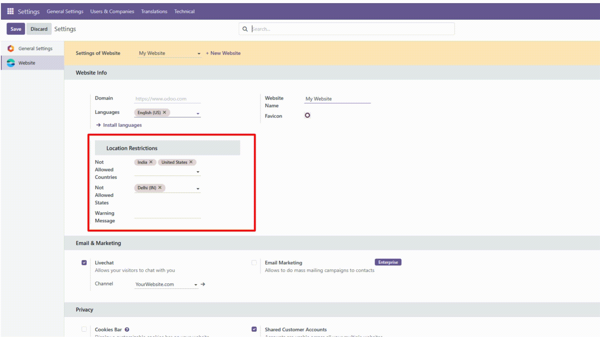

Enhance the security and compliance of your Odoo website by restricting access based on user location. The GeoPortal Access Control module identifies visitor locations using IP geolocation and blocks access for users from specific countries or regions.
Configure restricted countries or regions from the backend and display customized messages for blocked users. Ensure your website is only accessible where it matters most.

Get up to 10 hours of free customization with the GeoPortal Access Control module!
Need additional features or adjustments? Our team is here to help tailor the module to your unique business requirements—whether it's advanced filtering, custom messaging, or enhanced geolocation services.
For Customization: business.dev.hub@gmail.com